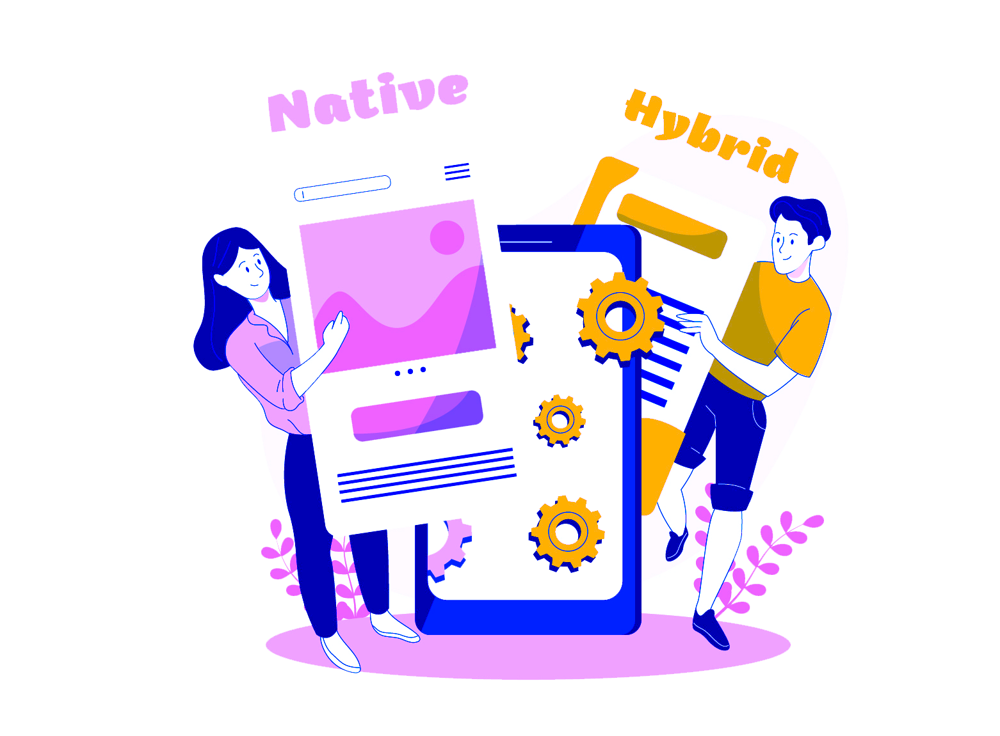
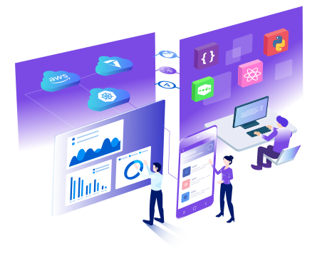

<div class="container">
    <div class="row">
        <!-- first row -->
        <div class="col-lg-12 col-xl-12">
            <div>
                <h2 class="text-center">
                    Our
                    <span id="js-services-id">
                        Services
                    </span>
                </h2>
                <hr>
                <div class="row">
                    <div class="col-lg-8">
                        <h2 class="title">Open Source + Full-Stack Development Services
                        </h2>
                        <p> Adopting OSS tools for digital products gives our customers the design-freedom and low
                            expenses
                            necessary to meet their specific business needs. Open source technologies can only be
                            leveraged by
                            savvy and passionate developers, who keep up with the changing technology trends and can
                            quickly find
                            fixes to blockers in the development cycle. Our digital product developers can meet such
                            challenges,
                            as they have met before, to manifest our customer's ideas to reality. <br>
                            <br>
                        </p>
                    </div>
                    <div class="col-lg-4">
                        
                    </div>
                </div>
                <div class="row">
                    <div class="col-lg-4">
                        
                    </div>
                    <div class="col-lg-8">
                        <h2 class="title">Native + Hybrid Mobile-App Development Services</h2>
                        <p> Design - Develop - Deploy your mobile-app to Apple AppStore and Google Play with expert
                            consultation
                            from our dedicated mobile app development team. Save time and cut costs with our hybrid app
                            development, where we code once and migrate to other mobile platforms without reworking on
                            the code
                            and design. </p>
                    </div>
                </div>
                <div class="row">
                    <div class="col-lg-8">
                        <h2 class="title">Businesses and Customers
                            Across All Industries and Demographics
                        </h2>
                        <p> We serve businesses across all industries and demographics on their digital transformation
                            process.
                            We create solutions for sophisticated business functions to make it easy-to-use for product
                            owners and
                            end-users. </p>
                    </div>
                    <div class="col-lg-4">
                        
                    </div>

                </div>
            </div>
        </div>
    </div>

</div>